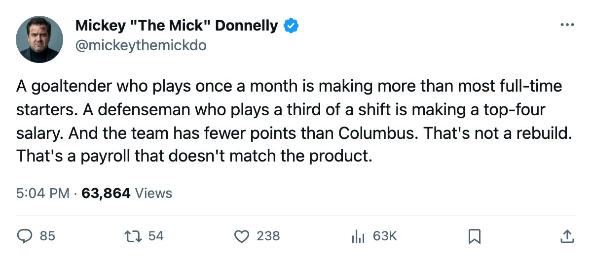
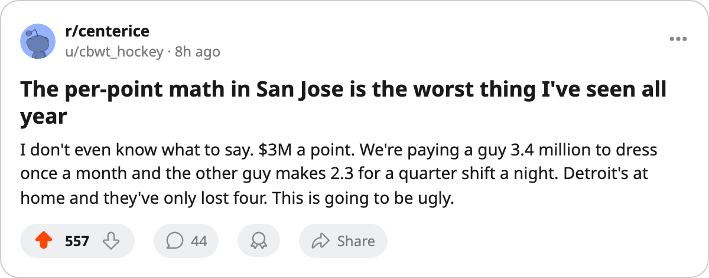

DET
DET$66.24M. 22 POINTS. $3.01M EACH. SAN JOSE ARE THE MOST OVERPAID CLUB IN HOCKEY
Four straight losses, 3-11 at home, two players in the league's morale basement. They visit Detroit tonight, who are 10-4 at home for $2.04M a point.
 Mickey "The Mick" DonnellyColumnist, ex-goalie · The Penalty Box
Mickey "The Mick" DonnellyColumnist, ex-goalie · The Penalty Box San Jose Sharks pay $66.24M. They have 22 points in 25 games. That is $3.01M per point, the worst figure in the league. Phoenix sit second at $2.92M.
San Jose Sharks pay $66.24M. They have 22 points in 25 games. That is $3.01M per point, the worst figure in the league. Phoenix sit second at $2.92M.  Nashville Predators pay $51.08M and have 36 points at $1.42M each.
Nashville Predators pay $51.08M and have 36 points at $1.42M each.
The Sharks are 8-12-4, on a 4-game losing streak, and 3-11 at home. Their club morale sits at 89.0, the 3rd-lowest in a 30-team league. Two Sharks are in the league's 15 most miserable players.
Two men playing nothing
 Jeff Hackett79 has a morale of 74, an overall of 82, and a salary of $3.40M. He has played 5 games at 59.6 minutes a night. Five. In a 25-game season.
Jeff Hackett79 has a morale of 74, an overall of 82, and a salary of $3.40M. He has played 5 games at 59.6 minutes a night. Five. In a 25-game season.  Jyrki Lumme74 has a morale of 76, a salary of $2.30M, and 11.4 minutes a night across 22 games. Hackett suits up once every five games. Lumme plays a third of a game a night.
Jyrki Lumme74 has a morale of 76, a salary of $2.30M, and 11.4 minutes a night across 22 games. Hackett suits up once every five games. Lumme plays a third of a game a night.
Detroit host them tonight. They are 12-11-1, $63.16M in payroll, and 10-4 at home. Their per point is $2.04M, with 31 points in 27 games. San Jose have 22 in 25.
This is the first meeting between these clubs this season. San Jose are 2-0-1 in the Pacific division. Outside it, they are nothing. The money went to men who don't play, the ice time went to men who don't produce, and the 4-game slide says the room knows it. A club that pays $3.01M for a point should not be visiting a 10-4 home club as the road favorite to lose and wondering why nobody in the building can put two wins together.

